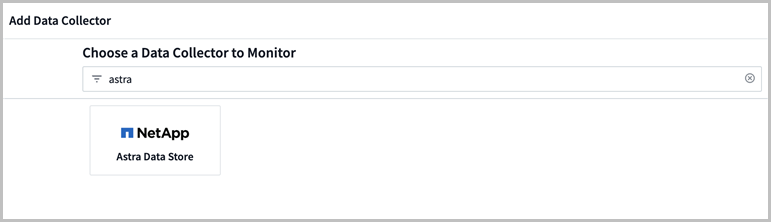
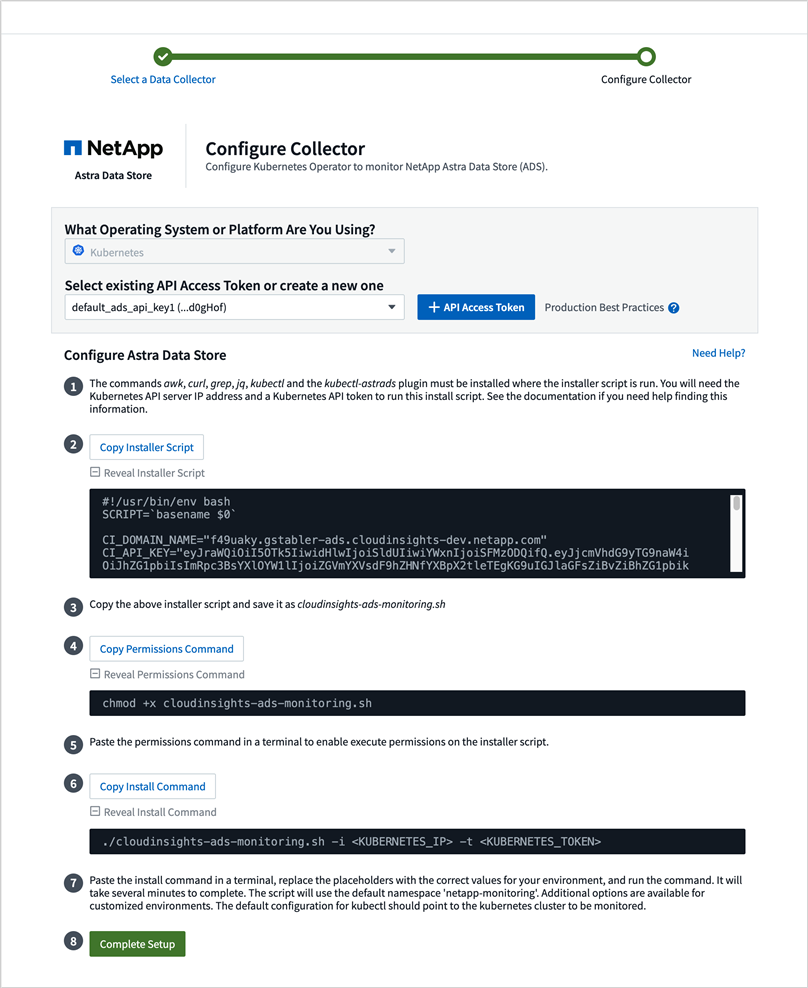

使用 Cloud Insights 监控指标
提供者
您可以使用 Cloud Insights 监控 Astra 数据存储预览指标。
以下是 Cloud Insights 中显示的一些示例 Astra 数据存储预览指标：
您还可以使用显示在 Astra Data Store 预览版中生成的指标列表 [Open Metrics API help]。
完成 Cloud Insights 连接前提条件任务
在将 Astra 数据存储与 Cloud Insights 连接之前，您需要完成以下任务：
-
"安装 Astra 数据存储监控操作员" 这是 Astra Data Store 预览安装说明的一部分。
-
"安装 kubectl-astrad 二进制文件" 这是 Astra Data Store 预览安装说明的一部分。
-
确保以下命令可用：
jk ， curl ， grep和JQ
收集以下信息：
-
对以下类别具有读 / 写权限的 * Cloud Insights API 访问令牌 * ：采集单元，数据收集，数据载入和日志载入。此选项将用于读 / 写操作，设置采集单元以及设置数据载入过程。
-
* Kubernetes API 服务器 IP 地址和端口 * 。用于监控 Astra Data Store 预览集群。
-
* Kubernetes API 令牌 * 。此选项用于调用 Kubernetes API 。
-
* 永久性卷配置 * 。有关如何配置永久性卷的信息。
采集单元存储
采集单元需要三个永久性卷来存储安装文件，配置数据和日志。监控操作员使用默认存储类创建永久性卷请求。在运行安装程序脚本时，您可以使用 ` -s` 选项指定其他存储类名称。
如果您的 Kubernetes 集群没有存储配置程序（例如 NetApp Trident ），您可以在运行安装程序脚本时使用 ` -r` 选项提供本地文件系统路径。设置 ` -r` 选项后，安装程序脚本会在提供的目录中创建三个永久性卷。此目录至少需要 150 GB 的可用空间。
下载并运行安装脚本
Cloud Insights 提供了 Bash 脚本，用于通过监控操作员启用 Astra 数据存储预览监控。安装脚本将安装一个采集单元以及 Astra Data Store 收集器，一个 Telegraf 代理和一个 Fluent Bit 代理。
下载 Cloud Insights 租户域名和选定的 Cloud Insights API 访问令牌后，此令牌将嵌入安装程序脚本中。
然后，指标将按如下所示发送：
-
Telegraf 将向 Cloud Insights 数据湖发送指标。
-
Fluent Bit 会将日志发送到日志载入服务。
显示安装程序脚本帮助
安装程序脚本的完整帮助文本如下所示：
显示安装程序脚本帮助文本：
./cloudinsights-ads-monitoring.sh -h
响应：
USAGE: cloudinsights-ads-monitoring.sh [OPTIONS]
Configure monitoring of Astra Data Store by Cloud Insights.
OPTIONS:
-h Display this help message.
-d ci_domain_name Cloud Insights tenant domain name.
-i kubernetes_ip Kubernetes API server IP address.
-k ci_api_key Cloud Insights API Access Token.
-n namespace Namespace for monitoring components. (default: netapp-monitoring)
-p kubernetes_port Kubernetes API server port. (default: 6443)
-r root_pv_dir Create 3 Persistent Volumes in this directory for the Acquisition Unit.
Only specify this option if there is no Storage Provisioner installed and the PVs do not already exist.
-s storage_class Storage Class name for provisioning Acquisition Unit PVs. If not specified, the default storage class will be used.
-t kubernetes_token Kubernetes API server token.
运行安装脚本
-
如果您还没有 Cloud Insights 帐户，请创建一个。
-
登录到 Cloud Insights 。
-
从 Cloud Insights 菜单中，单击 * 管理 * > * 数据收集器 * 。
-
单击 * + Data Collector* 以添加新收集器。

-
单击 * Astra Data Store* 图块。
-
选择正确的 Cloud Insights API 访问令牌或创建新令牌。
-
按照说明下载安装程序脚本，更新权限并运行此脚本。
此脚本包含您的 Cloud Insights 租户 URL 和选定的 Cloud Insights API 访问令牌。

-
完成脚本后，单击 * 完成设置 * 。
安装脚本完成后， Astra Data Store 收集器将显示在 Datasources 列表中。

如果脚本因错误而退出，您可以稍后在解决错误后再次运行它。如果您的环境不使用默认设置，则该脚本支持其他参数，例如监控操作员命名空间和 Kubernetes API 服务器端口。使用 ` ./cloudinsights-ads-monitoring.sh -h` 中的 -h选项查看使用情况和帮助文本。如果配置成功，安装脚本将生成如下输出：
Configuring Cloud Insights monitoring for Astra Data Store . . . Configuring monitoring namespace ... Configuring output sink and Fluent Bit plugins Configuring Telegraf plugins Configuring Acquisition Unit ... Acquisition Unit has been installed successfully. Configuring Astra Data Store data collector Astra Data Store collector data '<CLUSTER_NAME>' created Configuration done!
代理 CR 示例
以下是运行安装程序脚本后 monitoring-NetApp 代理 CR 的外观示例。
spec:
au:
isEnabled: true
storageClassName: auto-sc
cluster-name: meg-ads-21-22-29-30
docker-repo: docker.repo.eng.netapp.com/global/astra
fluent-bit:
- name: ads-tail
outputs:
- sink: ADS_STDOUT
substitutions:
- key: TAG
value: firetapems
- key: LOG_FILE
values:
- /var/log/firetap/*/ems/ems
- /var/log/firetap/ems/*/ems/ems
- key: ADS_CLUSTER_NAME
value: meg-ads-21-22-28-29-30
- name: agent
- name: ads-tail-ci
outputs:
- sink: CI
substitutions:
- key: TAG
value: netapp.ads
- key: LOG_FILE
values:
- /var/log/firetap/*/ems/ems
- /var/log/firetap/ems/*/ems/ems
- key: ADS_CLUSTER_NAME
value: meg-ads-21-22-28-29-30
output-sink:
- api-key: abcd
domain-name: bzl9ngz.gst-adsdemo.ci-dev.netapp.com
name: CI
serviceAccount: sa-netapp-monitoring
telegraf:
- name: ads-open-metric
outputs:
- sink: CI
run-mode:
- ReplicaSet
substitutions:
- key: URLS
values:
- http://astrads-metrics-service.astrads-system.svc.cluster.local:9341
- key: METRIC_TYPE
value: ads-metric
- key: ADS_CATEGORY
value: netapp_ads
- key: ADS_CLUSTER_NAME
value: meg-ads-21-22-28-29-30
- name: agent
status:
au-pod-status: UP
au-uuid: eddeccc6-3aa3-4dd2-a98c-220085fae6a9
编辑 Cloud Insights 连接
您可以稍后编辑 Kubernetes API 令牌或 Cloud Insights API 访问令牌：
-
如果要更新 Kubernetes API 令牌，应从 Cloud Insights UI 编辑 Astra 数据存储收集器。
-
如果要更新用于遥测和日志的 Cloud Insights API 访问令牌，应使用 kubectl 命令编辑监控操作员 CR 。
更新 Kubernetes API 令牌
-
登录到 Cloud Insights 。
-
选择 * 管理 * > * 数据收集器 * 以访问数据收集器页面。
-
找到 Astra Data Store 集群的条目。
-
单击页面右侧的菜单，然后选择 * 编辑 * 。
-
使用新值更新 Kubernetes API Token 字段。
-
选择 * 保存收集器 * 。
更新 Cloud Insights API 访问令牌
-
登录到 Cloud Insights 。
-
选择 * 管理 * > * API 访问 * 并单击 * + API 访问令牌 * ，创建新的 Cloud Insights API 访问令牌。
-
编辑代理 CR ：
kubectl --namespace netapp-monitoring edit agent agent-monitoring-netapp
-
找到
output-sink部分，找到名为CI的条目。 -
对于标签
api-key，请将当前值替换为新的 Cloud Insights API 访问令牌。此部分如下所示：
output-sink: - api-key: <api key value> domain-name: <tenant url> name: CI -
保存并退出编辑器窗口。
监控操作员将更新 Telegraf 和 Fluent Bit 以使用新的 Cloud Insights API 访问令牌。
断开与 Cloud Insights 的连接
要断开与 Cloud Insights 的连接，您需要先从 Cloud Insights UI 中删除 Astra 数据存储收集器。完成后，您可以从监控操作员中删除采集单元， Telegraf 和 Fluent 位配置。
删除 Astra Data Store 预览收集器
-
登录到 Cloud Insights 。
-
选择 * 管理 * > * 数据收集器 * 以访问数据收集器页面。
-
找到 Astra Data Store 集群的条目。
-
选择屏幕右侧的菜单，然后选择 * 删除 * 。
-
单击确认页面上的 * 删除 * 。
删除采集单元， Telegraf 和 Fluent 位
-
编辑代理 CR ：
kubectl --namespace netapp-monitoring edit agent agent-monitoring-netapp
-
找到
au部分并将isenabled设置为false -
找到
flual-bit部分，然后删除名为ads-tail -CI的插件。如果没有其他插件，您可以删除flual-bit部分。 -
找到
telraf部分，然后删除名为ads-open-metric的插件。如果没有其他插件，您可以删除电报部分。 -
找到
output-sink部分，然后卸下名为CI的接收器。 -
保存并退出编辑器窗口。
监控操作员将更新 Telegraf 和 Fluent 位配置并删除采集单元 POD 。
-
如果您使用本地目录作为采集单元 PV ，而不是存储配置程序，请删除这些 PV ：
kubectl delete pv au-lib au-log au-pv
然后，删除运行采集单元的节点上的实际目录。
-
删除采集单元 POD 后，您可以从 Cloud Insights 中删除采集单元。
-
在 Cloud Insights 菜单中，选择 * 管理 * > * 数据收集器 * 。
-
单击 * 采集单元 * 选项卡。
-
单击采集单元 POD 旁边的菜单。
-
选择 * 删除 * 。
-
监控操作员将更新 Telegraf 和 Fluent 位配置并删除采集单元。
打开指标 API 帮助
下面列出了可用于从 Astra Data Store 预览版收集指标的 API 。
-
"help" 行说明了指标。
-
"type" 行表示指标是量表还是计数器。
# HELP astrads_cluster_capacity_logical_percent Percentage cluster logical capacity that is used (0-100) # TYPE astrads_cluster_capacity_logical_percent gauge # HELP astrads_cluster_capacity_max_logical Max Logical capacity of the cluster in bytes # TYPE astrads_cluster_capacity_max_logical gauge # HELP astrads_cluster_capacity_max_physical The sum of the space in the cluster in bytes for storing data after provisioning efficiencies, data reduction algorithms and replication schemes are applied # TYPE astrads_cluster_capacity_max_physical gauge # HELP astrads_cluster_capacity_ops The IO operations capacity of the cluster # TYPE astrads_cluster_capacity_ops gauge # HELP astrads_cluster_capacity_physical_percent The percentage of cluster physical capacity that is used (0-100) # TYPE astrads_cluster_capacity_physical_percent gauge # HELP astrads_cluster_capacity_used_logical The sum of the bytes of data in all volumes in the cluster before provisioning efficiencies, data reduction algorithms and replication schemes are applied # TYPE astrads_cluster_capacity_used_logical gauge # HELP astrads_cluster_capacity_used_physical Used Physical capacity of a cluster in bytes # TYPE astrads_cluster_capacity_used_physical gauge # HELP astrads_cluster_other_latency The sum of the accumulated latency in seconds for other IO operations of all the volumes in a cluster. Divide by astrads_cluster_other_ops to get the average latency per other operation # TYPE astrads_cluster_other_latency counter # HELP astrads_cluster_other_ops The sum of the other IO operations of all the volumes in a cluster # TYPE astrads_cluster_other_ops counter # HELP astrads_cluster_read_latency The sum of the accumulated latency in seconds of read IO operations of all the volumes in a cluster. Divide by astrads_cluster_read_ops to get the average latency per read operation # TYPE astrads_cluster_read_latency counter # HELP astrads_cluster_read_ops The sum of the read IO operations of all the volumes in a cluster # TYPE astrads_cluster_read_ops counter # HELP astrads_cluster_read_throughput The sum of the read throughput of all the volumes in a cluster in bytes # TYPE astrads_cluster_read_throughput counter # HELP astrads_cluster_storage_efficiency Efficacy of data reduction technologies. (logical used / physical used) # TYPE astrads_cluster_storage_efficiency gauge # HELP astrads_cluster_total_latency The sum of the accumulated latency in seconds of all IO operations of all the volumes in a cluster. Divide by astrads_cluster_total_ops to get average latency per operation # TYPE astrads_cluster_total_latency counter # HELP astrads_cluster_total_ops The sum of the IO operations of all the volumes in a cluster # TYPE astrads_cluster_total_ops counter # HELP astrads_cluster_total_throughput The sum of the read and write throughput of all the volumes in a cluster in bytes # TYPE astrads_cluster_total_throughput counter # HELP astrads_cluster_utilization_factor The ratio of the current cluster IO operations based on recent IO sizes to the cluster iops capacity. (0.0 - 1.0) # TYPE astrads_cluster_utilization_factor gauge # HELP astrads_cluster_volume_used The sum of used capacity of all the volumes in a cluster in bytes # TYPE astrads_cluster_volume_used gauge # HELP astrads_cluster_write_latency The sum of the accumulated latency in seconds of write IO operations of all the volumes in a cluster. Divide by astrads_cluster_write_ops to get the average latency per write operation # TYPE astrads_cluster_write_latency counter # HELP astrads_cluster_write_ops The sum of the write IO operations of all the volumes in a cluster # TYPE astrads_cluster_write_ops counter # HELP astrads_cluster_write_throughput The sum of the write throughput of all the volumes in a cluster in bytes # TYPE astrads_cluster_write_throughput counter # HELP astrads_disk_base_seconds Base for busy, pending and queued. Seconds since collection began # TYPE astrads_disk_base_seconds counter # HELP astrads_disk_busy Seconds the disk was busy. 100 * (astrads_disk_busy / astrads_disk_base_seconds) = percent busy (0-100) # TYPE astrads_disk_busy counter # HELP astrads_disk_capacity Raw Capacity of a disk in bytes # TYPE astrads_disk_capacity gauge # HELP astrads_disk_io_pending Summation of the count of pending io operations for a disk times time. Divide by astrads_disk_base_seconds to get the average pending operation count # TYPE astrads_disk_io_pending counter # HELP astrads_disk_io_queued Summation of the count of queued io operations for a disk times time. Divide by astrads_disk_base_seconds to get the average queued operations count # TYPE astrads_disk_io_queued counter # HELP astrads_disk_read_latency Total accumulated latency in seconds for disk reads. Divide by astrads_disk_read_ops to get the average latency per read operation # TYPE astrads_disk_read_latency counter # HELP astrads_disk_read_ops Total number of read operations for a disk # TYPE astrads_disk_read_ops counter # HELP astrads_disk_read_throughput Total bytes read from a disk # TYPE astrads_disk_read_throughput counter # HELP astrads_disk_write_latency Total accumulated latency in seconds for disk writes. Divide by astrads_disk_write_ops to get the average latency per write operation # TYPE astrads_disk_write_latency counter # HELP astrads_disk_write_ops Total number of write operations for a disk # TYPE astrads_disk_write_ops counter # HELP astrads_disk_write_throughput Total bytes written to a disk # TYPE astrads_disk_write_throughput counter # HELP astrads_value_scrape_duration Duration to scrape values # TYPE astrads_value_scrape_duration gauge # HELP astrads_volume_capacity_available The minimum of the available capacity of a volume and the available capacity of the cluster in bytes # TYPE astrads_volume_capacity_available gauge # HELP astrads_volume_capacity_available_logical Logical available capacity of a volume in bytes # TYPE astrads_volume_capacity_available_logical gauge # HELP astrads_volume_capacity_percent Percentage of volume capacity available (0-100). (capacity available / provisioned) * 100 # TYPE astrads_volume_capacity_percent gauge # HELP astrads_volume_capacity_provisioned Provisioned capacity of a volume in bytes after setting aside the snapshot reserve. (size - snapshot reserve = provisioned) # TYPE astrads_volume_capacity_provisioned gauge # HELP astrads_volume_capacity_size Total capacity of a volume in bytes # TYPE astrads_volume_capacity_size gauge # HELP astrads_volume_capacity_snapshot_reserve_percent Snapshot reserve percentage of a volume (0-100) # TYPE astrads_volume_capacity_snapshot_reserve_percent gauge # HELP astrads_volume_capacity_snapshot_used The amount of volume snapshot data that is not in the active file system in bytes # TYPE astrads_volume_capacity_snapshot_used gauge # HELP astrads_volume_capacity_used Used capacity of a volume in bytes. This is bytes in the active filesystem unless snapshots are consuming more than the snapshot reserve. (bytes in the active file system + MAX(0, snapshot_used-(snapshot_reserve_percent/100*size)) # TYPE astrads_volume_capacity_used gauge # HELP astrads_volume_other_latency Total accumulated latency in seconds for operations on a volume that are neither read or write. Divide by astrads_volume_other_ops to get the average latency per other operation # TYPE astrads_volume_other_latency counter # HELP astrads_volume_other_ops Total number of operations for a volume that are neither read or write # TYPE astrads_volume_other_ops counter # HELP astrads_volume_read_latency Total accumulated read latency in seconds for a volume. Divide by astrads_volume_read_ops to get the average latency per read operation # TYPE astrads_volume_read_latency counter # HELP astrads_volume_read_ops Total number of read operations for a volume # TYPE astrads_volume_read_ops counter # HELP astrads_volume_read_throughput Total read throughput for a volume in bytes # TYPE astrads_volume_read_throughput counter # HELP astrads_volume_total_latency Total accumulated latency in seconds for all operations on a volume. Divide by astrads_volume_total_ops to get the average latency per operation # TYPE astrads_volume_total_latency counter # HELP astrads_volume_total_ops Total number of operations for a volume # TYPE astrads_volume_total_ops counter # HELP astrads_volume_total_throughput Total thoughput for a volume in bytes # TYPE astrads_volume_total_throughput counter # HELP astrads_volume_write_latency Total accumulated write latency in seconds for volume. Divide by astrads_volume_write_ops to get the average latency per write operation # TYPE astrads_volume_write_latency counter # HELP astrads_volume_write_ops Total number of write operations for a volume # TYPE astrads_volume_write_ops counter # HELP astrads_volume_write_throughput Total write thoughput for a volume in bytes # TYPE astrads_volume_write_throughput counter
 请求文档变更
请求文档变更 在 GitHub 上编辑
在 GitHub 上编辑 提供者指南
提供者指南